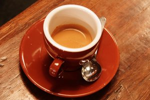

Про мене
Привіт! Мене звати Максим Лутчин. Я студент групи АКТ-21, вивчаю HTML в університеті, і мені подобається створювати унікальні веб-сторінки.
Мої улюблені речі
- Улюблений колір: синій
- Улюблене хобі: монтаж відео
- Улюблена їжа: піца
- Улюблена гра: Terraria
- Улюблена пора року: літо
- Улюблений напій: кава
- Улюблене місто: Львів
- Улюблена мова програмування: Python
Натхненна цитата
"Єдиний спосіб робити велику роботу – це любити те, що робиш." – Стів Джобс
Моя невелика таблиця
| № | Предмет | Опис |
|---|---|---|
| 1 | Web-технології | HTML, CSS та JavaScript |
| 2 | Алгоритмізація та програмування | Блок-схеми та алгоритми |
| 3 | Математичні методи | Чисельні методи розрахунків |
| 4 | Комп'ютерні мережі | Протоколи та мережеве обладнання |
| 5 | Інформаційна безпека | Захист даних |
| 6 | Архітектура комп'ютерних систем | Будова комп'ютера |
| 7 | Фізика | Механіка та електрика |
| 8 | Англійська мова | Технічна лексика |
Мій улюблений напій
